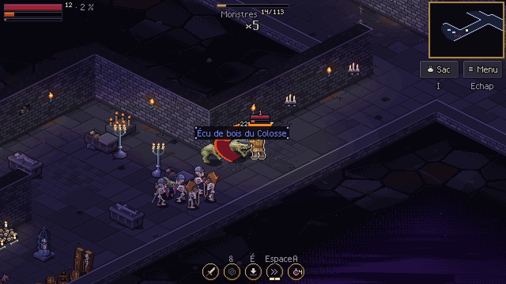
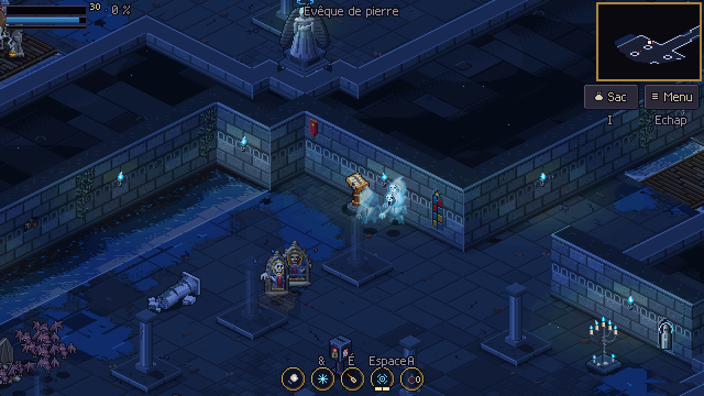

Abysse
Un action-RPG en pixel art, sombre et sans pression. Descends palier après palier, trouve l'objet qui change tout.
Télécharger
Navigateur, sur ordinateur
Jouer dans le navigateurLes empreintes servent à vérifier que le fichier est bien celui de Charly et qu'il n'a pas été abîmé ou changé. Je te les redis aussi dans un message : si elles diffèrent, ne lance pas le jeu. Comment vérifier : plus bas.
À quoi ça ressemble



Tu as déjà la 0.7.0 sur Android ?
Ne la désinstalle pas. La 0.8.0 s'installe par-dessus : c'est la même application et la même signature. Au premier lancement, elle trouve ta partie de la 0.7.0 toute seule et reprend tes personnages. Si tu désinstalles d'abord, ta partie part avec l'ancienne application.
Par prudence, exporte ta partie dans la 0.7.0 : Options, « Exporter », et garde le texte quelque part (un message à toi-même).
Si tu n'as pas joué depuis longtemps, joue une carte dans la 0.7.0 avant de mettre à jour : seule une partie à jour est reprise.
Installe la 0.8.0 par-dessus (les étapes sont juste en dessous).
Ouvre le jeu : tes personnages sont là, et le Refuge te dit ce qui a été repris.
S'ils n'y sont pas : Paramètres, onglet Sauvegarde, « Importer une sauvegarde », et colle le texte de l'étape 1.
Si tu jouais dans le navigateur sur un ordinateur : ouvre la version du navigateur, elle reprend ta partie toute seule. Pour l'emporter dans l'application Windows ou Android : la section « La version du navigateur », plus bas, te donne ta partie à copier, à coller ensuite dans l'application (Paramètres, onglet Sauvegarde, « Importer une sauvegarde »).
Installer sur Android
Télécharge le fichier avec le bouton ci-dessus, depuis ton téléphone.
Ouvre-le une fois le téléchargement fini (notification, ou dossier « Téléchargements »).
Autorise l'installation si Android le demande.
Il s'agit de « Installer des applis inconnues » pour ton navigateur ou ton gestionnaire de fichiers. Tu pourras désactiver cette autorisation juste après.
Installe quand même si Play Protect affiche un avertissement.
Le jeu ne vient pas du Play Store, c'est une version de test entre amis : Android prévient pour toute application dans ce cas.
Si Android propose « Mettre à jour », c'est bon signe : tu installes bien par-dessus la 0.7.0. S'il refuse ou parle d'un conflit, n'efface rien : écris à Charly.
Tourne ton téléphone en paysage et lance la partie.
Le jeu demande Android 8 ou plus récent et un téléphone 64 bits (la plupart des téléphones depuis 2017). Un téléphone d'entrée de gamme à système 32 bits ne pourra pas l'installer.
Installer sur Windows
Télécharge l'archive avec le bouton « Windows » et vérifie son empreinte.
Décompresse-la dans un dossier à toi : clic droit, « Extraire tout… ». Ne lance pas le jeu depuis l'intérieur du ZIP.
Lance
Abysse.exe(dans le dossier décompressé).Si Windows affiche « Windows a protégé votre ordinateur » (SmartScreen, « éditeur inconnu ») : touche « Informations complémentaires », puis « Exécuter quand même ».
Le jeu n'est pas signé : un certificat d'éditeur est payant, et Windows prévient pour tout programme non signé. C'est pour cela que l'empreinte est donnée ci-dessus : si elle est la bonne, le fichier est celui de Charly.
Ta partie est enregistrée dans
%LOCALAPPDATA%\fr.abysse.app\saves. Pour la remettre à zéro ou la déplacer, exporte-la depuis les Paramètres.
Tu peux jouer à la souris et au clavier, ou à la manette.
Vérifier le fichier téléchargé
Sur Windows, dans PowerShell (remplace le chemin par celui de ton fichier) :
Get-FileHash -Algorithm SHA256 $HOME\Downloads\abysse-windows.zip
Ou dans l'invite de commandes :
certutil -hashfile %USERPROFILE%\Downloads\abysse-windows.zip SHA256
Compare la suite de chiffres et de lettres avec celle de la page (les majuscules ne comptent pas). Pour l'APK, fais la même chose depuis un PC avec le fichier abysse.apk, avant de le copier sur ton téléphone. Si l'empreinte diffère, ne l'installe pas et ne le lance pas : retélécharge-le, et préviens Charly si ça recommence.
La version du navigateur
La 0.8.0 se joue dans le navigateur sur un ordinateur : jouer. Elle reprend toute seule une partie de la 0.7.0 jouée dans ce navigateur, et « Continuer avec Google » y retrouve ta partie en ligne. Sans compte, ta partie est gardée par ce navigateur, sur cet ordinateur : exporte-la de temps en temps. Sur un téléphone, la même adresse ouvre encore l'ancienne 0.7.0, figée.
Une partie jouée dans ce navigateur est gardée sur cet appareil. Tu peux l'emporter dans la 0.8.0 :
Sur iPhone
Pas encore d'application iPhone pour la 0.8.0. En attendant, la version 0.7.0 du navigateur marche sur iPhone (Safari, puis Partager, « Sur l'écran d'accueil »).
Notes de version
Version 0.8.0
19 novembre 2026
Abysse devient une vraie application, pour Android et pour Windows. Trois nouveaux boss, un coffre gardé dans chaque carte, la manette, une sauvegarde en ligne facultative, et des combats revus pour le Chevalier et la Sorcière. Sur Android, installe-la par-dessus la 0.7.0 sans la désinstaller : ta partie est reprise.
Nouveautés
- Android, Windows et navigateur : une application Android refaite, une première version Windows et, depuis le 20 novembre, le jeu dans le navigateur sur ordinateur.
- Trois nouveaux boss : l'Éteigneuse, la Lamproie de la citerne et le Taureau d'airain. Le jeu en compte huit, et chaque nouveau boss a son objet unique.
- Un coffre gardé dans chaque carte, à la place des petits coffres au hasard.
- Manette : tout le jeu se joue à la manette, et les boutons affichés suivent celle que tu tiens.
- Sauvegarde en ligne, facultative : « Continuer avec Google » garde ta partie en ligne et la retrouve sur un autre appareil.
- Français et anglais, au choix dans les Paramètres.
- Accessibilité : touches et boutons remappables, aide au daltonisme.
- Nouveau guidage : des leçons courtes et un but par personnage remplacent la liste de missions, avec des Succès à gagner.
- Combos de la Sorcière : le Météore frappe plus fort un ennemi Glacé, la Pluie de météores un ennemi en feu, la Comète noire un ennemi Électrisé (+50 % de dégâts).
- Enchaînements : la Charge emporte un Tourbillon en cours, un tir se bande pendant la Roulade, la Nova éclate à l'arrivée du Téléport.
- Objets uniques par classe : 159 uniques en tout, dont une panoplie pour le Traqueur.
- Élites élémentaires : Embrasé, Givrant, Orageux et Ténébreux.
- 18 nouveaux monstres, des boss redessinés et de nouveaux décors.
- Un familier de départ, le lièvre cornu. Tous les costumes et tous les familiers sont débloqués, sauf ceux qui se gagnent par un Succès ou une mission.
- Voies de l'arbre : le bouton « Voie » montre les prochains pas d'une des trois voies de ta classe.
- Proposer d'équiper : une option (Paramètres, Combat) pour équiper un meilleur objet dès que tu le ramasses.
- Refuge et ateliers redessinés ; le coffre passe à 48 cases par onglet.
- Effets des attaques de zone plus lisibles, avec un réglage « Flashs » pour les réduire.
Changements
- Chevalier : plus résistant (12 de vie par niveau), attaques de base plus fortes (+30 %). La Charge réduit de 25 % les dégâts reçus pendant 2 secondes, le Bond et la Charge donnent de la Rage par ennemi touché, le Tourbillon coûte 25 de Rage.
- Sorcière : 10 de vie par niveau (8 avant), Mana à 12 par seconde (9 avant), esquive à 15 % (10 % avant). Les Novas couvrent plus large ; Météore, Pluie de météores et Comète noire frappent plus fort et reviennent en 7 secondes (8,5 avant). La Comète noire fait quatre fois plus de dégâts aux élites et aux boss.
- Brûlure du Météore : le sol brûle 30 % du coup en 3 secondes, critiques et combos compris.
- Élites : la régénération s'interrompt 2 secondes après un coup, un monstre ne reçoit qu'un bouclier toutes les 7 secondes, et Blindé et Protecteur n'apparaissent plus ensemble.
- Forge : le prix de chaque niveau est fixe. Au-delà de +15, une jauge se remplit à chaque échec et assure la réussite une fois pleine ; un objet ne recule jamais.
- Expérience : gagnée en entier quel que soit l'écart de niveau ; une mort en coûte 2 %. Les niveaux 80 à 99 demandent 60 % d'expérience en moins.
- Résistances : feu, froid et foudre pèsent autant ; l'ombre est plus rare.
- Marchand : son étal est propre à chaque personnage.
- Runes : une rune qui ne va pas à une compétence est refusée.
- Sac : chaque emplacement vide montre l'objet qu'il attend.
- Familiers : le crapaud est remplacé par le lièvre cornu.
- Hors carte, quand rien ne bouge, le jeu passe à 30 images par seconde pour moins chauffer.
Corrections
- Des monstres restaient coincés contre un mur ou hors de la carte.
- Trois uniques du Traqueur (Bouche d'Ombre, Cape de l'Embusqué, Arc de Ronce) ne faisaient pas ce que dit leur description.
- Plusieurs descriptions étaient fausses (Pacte inversé, Ampleur, Charge).
- Des textes étaient coupés dans les menus.
- Dans le sac, une puissance à six chiffres déplaçait les colonnes.
Anciennes versions (application 0.7.0 et avant)
Version 0.7.0 10 octobre 2026
Plus de bouton « Valider » dans les arbres : un point alloué compte tout de suite, et tu peux l’annuler tant que l’arbre est ouvert. Le bouton « Descendre » propose le bon palier après chaque carte, avec des flèches pour en changer. Et ton familier ne boucle plus quand ton sac est plein.
Changements
- Dans l’arbre de compétences et dans l’arbre d’atlas, « Allouer » prend le chemin tout de suite : il n’y a plus de bouton « Valider ». Tes statistiques changent aussitôt et la partie est sauvegardée. Tant que tu gardes l’arbre ouvert, « Annuler (N) » en bas à droite rend le dernier chemin posé (le choix d’un nœud « Au choix » aussi), gratuitement, autant de fois que tu as alloué ; un nœud posé pendant la visite peut aussi se retirer seul avec « Retirer ». Ce que tu avais placé avant d’ouvrir l’arbre ne se reprend pas ainsi : c’est « Tout défaire » (gratuit jusqu’au niveau 30). retour joueur
- Deux petits boutons ← et → à côté de « Descendre » changent le palier de la prochaine carte d’un cran (les flèches du clavier aussi). Un palier choisi à l’Atlas ou avec ces boutons reste jusqu’à la fin de la prochaine carte. retour joueur
Corrections
- Avec le sac plein, ton familier se remettait à courir après chaque objet tombé et « Inventaire plein » revenait en boucle toutes les 3 secondes : il laisse maintenant l’objet où il est, jusqu’à ce qu’une place se libère, et le message n’est dit qu’une fois (puis seulement quand le sac a eu de la place entre-temps, ou après 30 secondes). Les ressources (la bourse) sont toujours ramassées. retour joueur
- Le bouton « Descendre » du Refuge gardait un ancien palier : après avoir enchaîné plusieurs cartes, il pouvait te proposer un palier déjà dépassé. Maintenant, à la fin de chaque carte, il te propose le palier suivant si tu poussais ton palier le plus profond, le même palier si tu en farmais un plus bas ou si tu es mort, et le palier conseillé pour te renforcer si un boss t’a battu. retour joueur
Version 0.6.0 10 octobre 2026
La forge change : ce sont maintenant les emplacements de ton héros qui s’améliorent, jusqu’à +30, et changer d’équipement ne fait plus rien perdre. Les ceintures ont trois familles au choix. Ta sauvegarde est convertie sans rien perdre, et le reste t’est remboursé.
Nouveautés
- Les emplacements de ton héros s’améliorent jusqu’à +30, plus les objets : à la forge, onglet Améliorer, touche un emplacement de la poupée (même vide) et frappe. Tout objet que tu portes là profite de son niveau, et changer d’équipement ne te fait plus jamais perdre une amélioration. Jusqu’à +15 la réussite est assurée ; ensuite elle descend jusqu’à 40 % à +30, un échec te rend la moitié du prix, et il ne fait jamais perdre un niveau (chaque échec de suite ajoute 10 points à la tentative suivante). Les armes et les armures y gagnent leurs statistiques de base, les anneaux des résistances, l’amulette de la vie.
- Trois Succès de plus à la forge (+20, +25 et +30, avec leur titre), et un liseré lumineux autour de ton héros selon ton meilleur emplacement : bleu glacé à +10, doré à +15, violet à +25, braise à +30.
- Les ceintures ont maintenant trois familles : l’Ascète (tes auras réservent moins), le Rempart (tu subis moins de dégâts quand ta vie est basse) et le Chasseur (plus de rareté des objets trouvés). La famille est écrite sur la ceinture, et l’effet de l’emplacement de la ceinture est celui de la famille de la ceinture que tu portes.
Changements
- À la forge, l’onglet « Reporter » disparaît (il n’y a plus rien à reporter) : les onglets sont Améliorer, Recycler et Parfaire. Les objets n’ont plus de « +N » : c’est la poupée qui affiche le niveau de chaque emplacement, en petit sur sa case, et la fiche d’un objet dit ce que son emplacement lui apporte.
- Ta sauvegarde est convertie sans rien perdre : chaque emplacement prend le meilleur +N que tu avais pour lui, et tous tes autres objets améliorés (ceux du sac et du coffre) te sont remboursés en or et en poussière d’âme. Une fenêtre te dit combien au premier lancement, une seule fois. Tes statistiques de base ne bougent pas (les 15 premiers niveaux n’ont pas changé), et tes anneaux, ton amulette et ta ceinture améliorés reçoivent 2 niveaux de plus en cadeau.
Version 0.5.0 9 octobre 2026
Tu peux maintenant me signaler un problème directement depuis le jeu, ta vie et ta ressource s’affichent au-dessus de ton héros, « Tout défaire » se trouve dans l’arbre, et le son ne se dégrade plus après de longues sessions.
Nouveautés
- Paramètres, onglet Sauvegarde : « Signaler un problème » prépare un petit rapport (version, appareil, fluidité, dernières cartes, erreurs). Écris ce qui s’est passé et touche « Envoyer » : il m’arrive directement. Sans connexion, tu peux toujours le copier et me l’envoyer comme tu veux. Rien ne part sans que tu touches « Envoyer ». Le rapport est effacé au plus tard 6 mois après avoir été lu. « Revoir les astuces » et « Tout marquer comme vu » passent dans l’onglet Jeu.
- En carte, ta vie et ta ressource (Rage, Mana ou Endurance) s’affichent en petit au-dessus de ton héros, pendant les combats et quand il te manque quelque chose. Réglage dans Paramètres, nouvel onglet Combat : Auto, Toujours ou Jamais. Les chiffres de dégâts, le compteur de série, les secousses et les flashs y sont rangés aussi.
Changements
- Défaire son arbre de compétences se fait maintenant depuis l’arbre : bouton « Tout défaire » en bas à gauche, gratuit jusqu’au niveau 30, puis payant en or (le prix s’affiche avant de confirmer). L’arbre d’atlas suit la même règle. Le marchand n’a plus d’onglet « Oubli ».
- Au Refuge, sur les écrans peu hauts (la plupart des téléphones, un PC en 1080p), la cour remonte un peu : le feu, les tonneaux, le coffre et les bêtes qui s’y promènent ne passent plus sous les boutons du bas.
Corrections
- « À propos » affiche enfin le bon numéro de version (il disait 0.1.0).
- Après de longues sessions, le son pouvait se dégrader : chaque changement de lieu gardait en mémoire l’ancien écho (environ 23 Mo), jusqu’à plusieurs Go au bout de quelques heures. retour joueur
- Les pulsations des auras sonnaient beaucoup trop fort (jusqu’à 29 dB au-dessus de leur niveau prévu) et couvraient la musique en combat. retour joueur
Version 0.4.0 9 octobre 2026
Un petit cadeau t’attend au Refuge quand tu reviens, la marche est plus égale dans toutes les directions, et plusieurs bugs que vous avez remontés sont corrigés (dont les flashs noirs dans les menus).
Nouveautés
- Cadeau du retour : quand tu reviens après une pause (20 heures ou plus), un colis t’attend au Refuge devant l’Atlas, avec un peu d’or, de la poussière d’âme et un objet mystère à ta taille. Jusqu’à 3 colis peuvent attendre, rien ne se perd si tu tardes, et aucun décompte ne s’affiche. retour joueur
- Au Refuge, le sac a un bouton « Forge » sous la fiche d’un objet : il ouvre la forge avec cet objet déjà sur l’enclume, et le sac revient quand tu la fermes. retour joueur
Changements
- Les flèches des cases du sac se lisent mieux : elles se posent sur une petite plaque sombre, et la flèche des uniques prometteurs est maintenant blanche (le jaune ne dit plus que la rareté). retour joueur
- La marche est compensée pour la vue en perspective : sur l’écran, aller sur le côté n’est plus deux fois plus rapide qu’aller vers le haut ou le bas, mais environ 1,4 fois (la vitesse moyenne ne change pas). Les pas suivent la vitesse vue à l’écran. retour joueur
Corrections
- Des éclairs noirs passaient dans les menus (compétences, arbre, sac…) à peu près une fois par seconde sur certains téléphones. retour joueur
- Dans le sac, le « +xxx » de puissance qui s’affiche à côté du chiffre passait derrière les objets : il reste maintenant dans sa colonne. retour joueur
- À la forge, les valeurs « avant → après » ne se suivaient pas d’un niveau à l’autre (« 5 → 6 » puis « 4,3 → 4,8 ») : une ligne garde maintenant le même nombre de décimales à tous les niveaux, comme sur la fiche de l’objet. retour joueur
- La mini-carte montre maintenant l’eau profonde et la lave comme de l’eau et de la lave, avec leur rivage (les douves de la Mère noyée apparaissaient comme du sol). retour joueur
- Le Bond écrasant du Chevalier pouvait, rarement, passer au travers du coin d’un mur.
Version 0.3.0 7 octobre 2026
Vos retours sont passés par là. Une interface plus grande et plus lisible, des cartes avec moins d’allers-retours, et c’est toi qui choisis ton équipement à partir du niveau 10.
Nouveautés
- Réglage « Taille de l’interface » : le sac, les compétences, la forge, le marchand, l’atlas et les autres écrans s’affichent en plus grand. retour joueur
- « Continuer à explorer » à la fin d’une carte : un portail touché trop tôt ne te fait plus perdre la fin de la carte. retour joueur
- La grande carte se fait glisser au doigt ou à la souris, et se zoome (molette, pincement, boutons + et −). retour joueur
- Onglet « Commandes » dans les Paramètres, et sur PC la lettre de la touche s’affiche sur les boutons. retour joueur
- Imprégnation au choix à l’autel : 3 Pierres d’imprégnation pour choisir l’élément de ton arme (1 pierre pour un élément au hasard).
- Le nom d’une arme suit son élément : un Bâton de cendre est en feu, un Bâton de givre en froid, un Bâton d’orage en foudre… retour joueur
Changements
- Équipement automatique seulement jusqu’au niveau 10, ensuite c’est toi qui choisis (réglable : Au début, Toujours, Jamais). retour joueur
- La flèche verte s’affiche dès que le chiffre de puissance monte, comme sur la fiche de l’objet. retour joueur
- Fiches d’objets : la rareté écrite sous le nom (Magique, Rare, Unique), et les lignes de feu, de froid, de foudre et d’ombre avec leur icône et leur couleur. retour joueur
- Partout des « +N % » : plus de mélange avec des « ×2 ». retour joueur
- Fiches de sorts : l’élément en tête des dégâts, et une ligne qui dit si tes bonus d’élément s’appliquent. retour joueur
- Les vitesses expliquées : attaque et incantation accélèrent l’attaque de base, la recharge accélère les compétences. retour joueur
- Cartes avec plus de boucles et moins d’impasses : environ deux fois moins de chemin refait. retour joueur
- Refuge : un vrai bouton « Sac », à côté de Compétences, Arbre et Missions. retour joueur
- Le pourcentage d’expérience s’affiche à côté du niveau, et les chiffres exacts dans la fiche du personnage. retour joueur
Corrections
- Une orbe comparée à côté d’un bâton à deux mains affichait un gain impossible. retour joueur
- Sur Android, le clavier rapetissait le jeu en écrivant son nom. retour joueur
- Sur Android, la barre de notification (heure, wifi) revenait pendant la partie. retour joueur
Version 0.2.0 5 octobre 2026
Les auras arrivent. Réserve une part de ton Mana ou de ta vie contre un effet permanent.
Nouveautés
- 12 auras et jusqu’à 4 emplacements, dont le Pacte inversé qui réserve la vie à la place du Mana.
- Six uniques pensés pour les auras, et de nouvelles propriétés de Mana et d’efficacité de réservation.
- Les icônes des auras portées sous les barres de vie et de Mana.
Changements
- Le coût en Mana des compétences grandit avec leur niveau.
- Rage froide adoucie : 40 % de la vie gardée, +5 % de dégâts.
Version 0.1.0 5 octobre 2026
La première version de test entre amis, sur Android et dans le navigateur.
Nouveautés
- Trois classes (Chevalier, Sorcière, Traqueur), cinq biomes, des paliers sans fin, des boss avec leur salle, et des centaines d’objets.